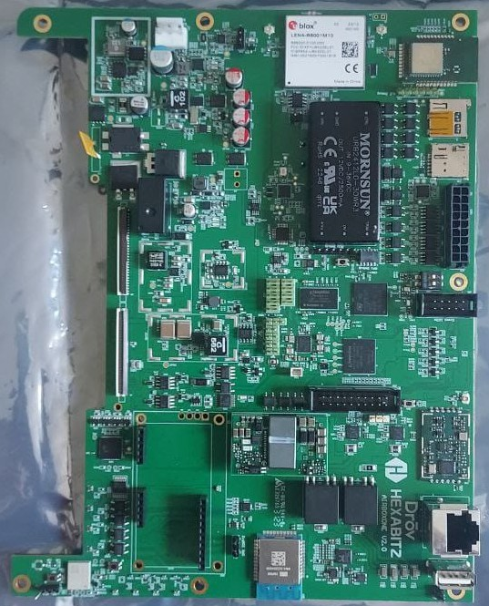
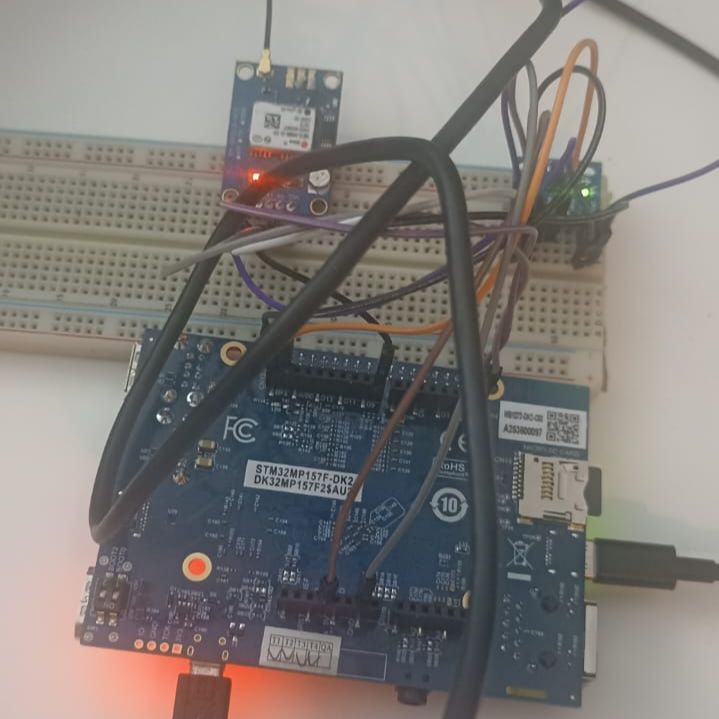

Issam SAYYAF
Firmware & Embedded Systems Engineer
Candidature : Firmware Engineer — Schneider Electric, Power Products, Grenoble
5+ ans de developpement embarque en C/C++ sur ARM Cortex-M et STM32 — drivers, BSP, firmware temps reel
GPIO, I2C, SPI, UART, ADC, CAN, USB — implementation de drivers kernel et peripheriques bare-metal
Architecture RTOS (FreeRTOS, Zephyr, ThreadX), ordonnancement temps reel, conception firmware multi-taches sur MCU
Git/GitHub, Docker, tests automatises, pipelines CI/CD, revues de code entre pairs
10+ articles publies — excellentes capacites de redaction de specifications et documents de conception
Collaboration internationale (France, Italie, USA), methodologies agiles, anglais courant + francais

Distribution Linux personnalisee pour STM32MP1 : chaine de boot complete (TF-A, OP-TEE, U-Boot), couches Yocto custom, drivers (GPIO, I2C, SPI, UART), device tree overlays, systeme OTA via SWUpdate avec schema de partition A/B.

BSP Yocto en deux versions (STM32MP157 et NXP i.MX93) pour monitoring de camions : driver CAN bus, integration modem 5G, drivers GNSS, FreeRTOS sur Cortex-M, configuration KAS, personnalisation chaine de boot complete.

Distribution Yocto complete pour Muzziball sur STM32MP157 : secure boot, OTA (SWUpdate), integration PureData pour traitement audio temps reel, drivers IMU, microphone, haut-parleur, matrices LED, gestion batterie LiPo. Deploiement securise en production.
Mini-serveur C++ sur STM32MP157-DK orchestrant la communication serie avec IMU, batterie LiPo, microphone, haut-parleur et matrices LED. Pont entre PureData, BLE et Wi-Fi.

Driver IIO pour capteur IMU MPU-6050 : communication I2C, gestion d'interruptions, interface sysfs pour acquisition temps reel accelerometre et gyroscope.
Driver kernel Linux pour recepteur GNSS u-blox : parsing NMEA, exposition des donnees de position via le sous-systeme kernel.

Systeme complet de capteur sans fil pour la detection de fissures : conception hardware, firmware edge device, protocoles de communication et integration cloud.